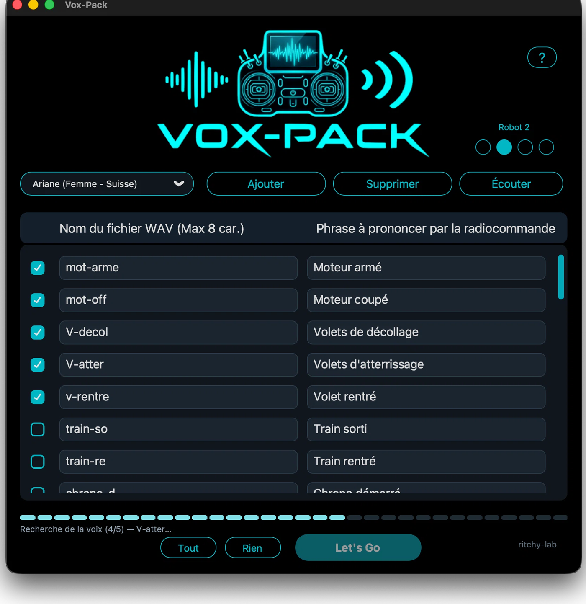

Vox-Pack
Fait parler ta radiocommande.
Vox-Pack fabrique les fichiers de voix que ta radio EdgeTX prononce pendant le vol : « Moteur armé », « Train sorti », « Chrono démarré »… Tu choisis la voix, tu écris les phrases, et l'application crée des WAV prêts pour la carte SD.

30 voix
11 voix françaises et 19 anglaises, dont les officielles d'EdgeTX : Denise (★) et Emily (★).
Les sons système d'EdgeTX
Les 186 annonces SYSTEM en français (212 en anglais), avec la voix
choisie, dans un dossier SYSTEM/ prêt pour la carte SD.
Voix de robot
Quatre pastilles Robot 1 à 4 pour transformer la voix choisie. Aucune allumée : la voix normale.
Format EdgeTX
Des WAV 16 bits, 32 kHz, mono, exactement ce que la radio attend.
Une connexion Internet est nécessaire pour créer les voix (le service de Microsoft Edge). Les fichiers produits, eux, restent sur ta carte SD et fonctionnent hors ligne. L'application est en français et en anglais.
Code source sur GitHub · licence MIT · macOS et Windows.